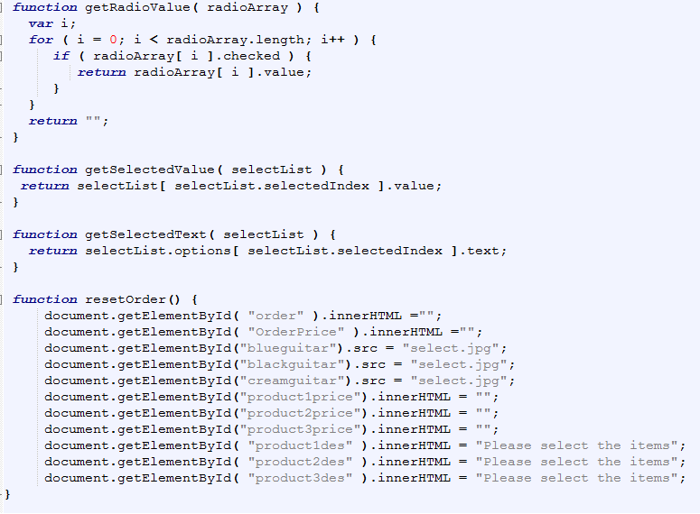
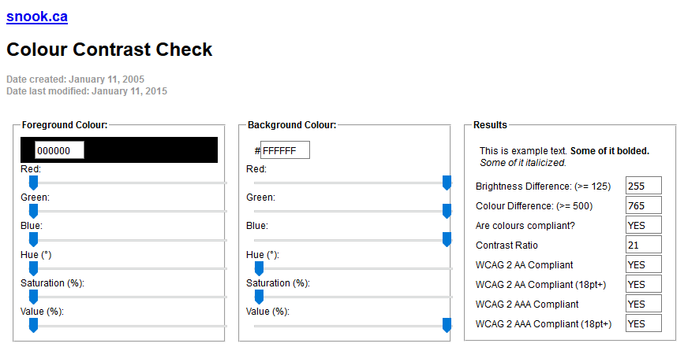

• The HTML forms similar to the valentine Flowers tutorial have been used.
• And the image have been take from music webpages
This font has been used as it
This screenshot shows the text vs background screen shot of test results form an online colour contrast checking tool.
The colour between the text and background have been balanced and I have used red colour to highlight the product prices and important information.